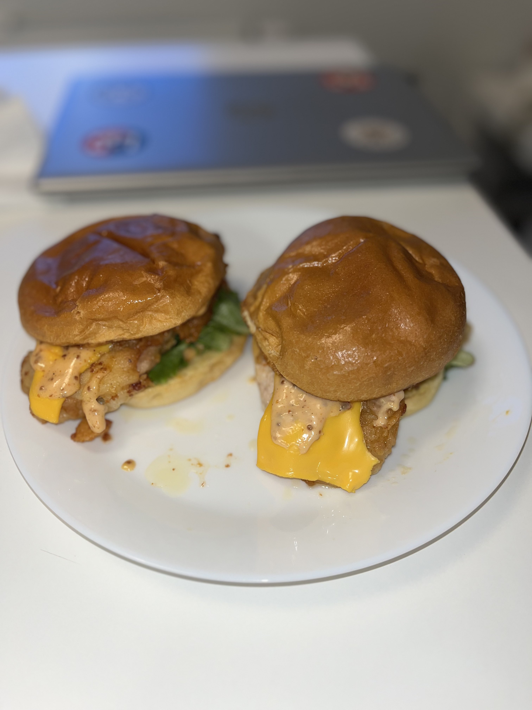

Crsipy Chicken Burger

Ingrédients :
- Epices
- Sel
- Poivre
- Ail en poudre
- Curcumin
- 200g de poulet en deux tranches
- Moutarde de Dijon
- Mayonnaise
- Crème frâiche
- Cream cheese
- Deux buns briochés (ou autre buns)
- Salade
- Deux tranches de cheddar
- Huile de friture
- Farine
- Eau tiède
Préparation :
- Trompez le poulet dans de l'eau tiède.
- Mélangez vos épices à la farine puis plongez-y vos morceaux de poulet sans les égoutter.
- Faites frire (et attention de bien cuire l'intérieur) vos morceaux de poulet.
- Pour la sauce, mélangez 4 cuillères à café de mayonnaise avec 3 cuillères à café de crème fraîche et 1 de moutarde de Dijon, rajoutez les épices et mélangez.
- Dorez vos buns et montez votre burger en y mettant la sauce, la salade et les morceaux de poulet sur lesquels vous ajoutez les tranches de cheddar./li>
Mon avis :
Très honnêtement j'ai kiffé le faire et le manger, c'était très bon, mais ça n'a pas donné lieu à un poulet très crispy, c'était average crispy mais très facile et sans trop d'ingrédients (j'updaterais cette recette quand je tomberais sur une formule qui donne un poulet plus crispy).